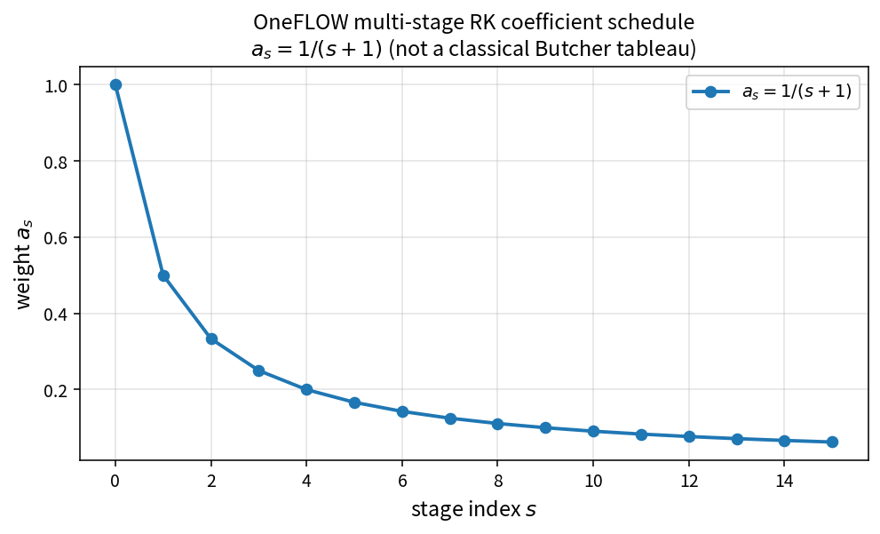

Runge-Kutta stage weight schedule
Purpose
OneFLOW stores a multi-stage coefficient vector rk_coef with
where (N=) rk_stage. Each stage assigns ctrl.lhscoef = a_s before
residual/update tasks.
This is OneFLOW’s schedule, not a claim of classical RK order or a Butcher tableau.
Formula
Source map
Pure API:
RungeKuttaStageWeightinTimeIntegralPolicy.hConsumers:
Ctrl,NsCtrl,INsCtrl,TurbCtrlfillrk_coefRuntime:
TimeIntegral::RungeKuttasetslhscoefTests:
tests/solver/time_integral_policy_test.cppTheory table:
tools/verification/data/time_integral_rk_stage_weight_theory.csvContract Workbench id:
time_integral_rk_stage_weight


What this proves / does not prove
Proves: (a_s=1/(s+1)`` matches the pure API and is what Ctrl builds.
Does not prove: temporal order, stability region, or dual-time accuracy.
References
OneFLOW
TimeIntegral/ control initialization (implementation fact).Classical RK literature for comparison only — coefficients differ.